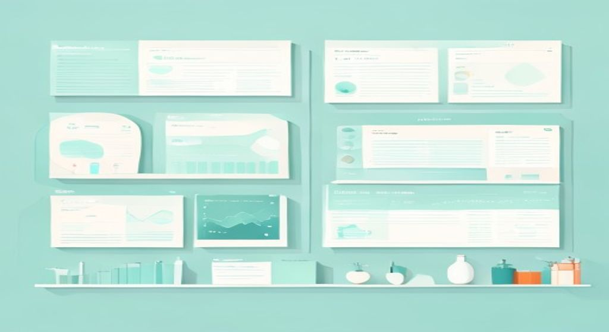

Lo que de verdad cae de este tema, con los títulos exactos del PDF: 7.2 Tipos de paneles, 7.5 Ventajas y limitaciones y 7.8 Aplicaciones en marketing y comunicación digital. Los paneles constituyen una herramienta fundamental para obtener información continua y estructurada sobre un grupo determinado de individuos o empresas a lo largo del tiempo.

El panel: una película continua del mercado, frente a la foto puntual de la encuesta.
Un panel es un conjunto de individuos, hogares o empresas seleccionados para participar de manera periódica y continua en la recopilación de datos. Por su naturaleza longitudinal permite observar la evolución de las mismas variables en el mismo grupo, frente a las encuestas transversales, que recogen datos en un momento puntual. En el examen lo que cae es saber los tipos de paneles (7.2), sus ventajas y limitaciones (7.5) y sus aplicaciones en marketing y comunicación digital (7.8).
🧠 Los conceptos
Despliega cada tarjeta, léela con calma y márcala como entendida. La barra de arriba irá subiendo. Las tarjetas con la etiqueta CAE son las que el profe ha marcado para el examen del 8-jun.
Antes de entrar en lo que cae, la base del tema. Los paneles en investigación comercial constituyen una herramienta fundamental para obtener información continua y estructurada sobre un grupo determinado de individuos o empresas a lo largo del tiempo. Se trata de muestras estables que participan de manera recurrente en estudios, proporcionando datos que permiten observar tendencias, cambios de comportamiento y patrones de consumo.
A diferencia de las investigaciones puntuales, los paneles ofrecen la posibilidad de analizar la evolución de variables en periodos prolongados, lo que aporta un valor estratégico a las decisiones empresariales y de marketing. Es un recurso longitudinal.
Figura 1 (Encuesta vs. Panel). Según el PDF, esta figura compara visualmente la encuesta como una fotografía puntual del mercado frente al panel, entendido como una película continua que permite observar evolución y tendencias a lo largo del tiempo, integrando un eje temporal que refuerza la diferencia entre la medición transversal y la longitudinal.
Apartado del examen. El PDF define el panel como un conjunto de individuos, hogares o empresas seleccionados para participar de manera periódica y continua en la recopilación de datos sobre determinados aspectos de consumo, hábitos, actitudes o comportamientos. Esta participación se realiza siguiendo una metodología constante, lo que asegura la comparabilidad de los resultados en diferentes momentos del tiempo. La estabilidad de la muestra y la repetición de las mediciones convierten al panel en un recurso único para detectar variaciones y tendencias que no serían visibles mediante estudios aislados.
En términos metodológicos, la principal característica de un panel es su naturaleza longitudinal. A diferencia de las encuestas transversales, que recogen datos en un momento puntual, los paneles permiten observar la evolución de las mismas variables en el mismo grupo de participantes. Esta continuidad es clave para identificar patrones estables o cambios significativos, como modificaciones en las preferencias de marca o en los niveles de satisfacción con un servicio.
Tipos según el sujeto de estudio
El PDF señala que existen distintos tipos de paneles según el sujeto de estudio y la información que se recopila:
Paneles de carácter abierto y cerrado
El PDF añade que también se distinguen los paneles de carácter abierto y cerrado:
| Tipo | ¿Cómo es? | Ventaja | Riesgo |
|---|---|---|---|
| Panel abierto | Los participantes pueden ser sustituidos o renovados periódicamente | Permite mantener la representatividad | Se pierde algo de continuidad |
| Panel cerrado | Los mismos individuos permanecen durante todo el periodo de estudio | Maximiza la consistencia de los datos | Puede derivar en sesgos si se producen abandonos significativos |
Tabla 1. Tipos de paneles y variables analizadas
Esta tabla es el núcleo del 7.2. «Tabla 1. Tipos de paneles y variables analizadas» (literal del PDF): cada tipo con su unidad de análisis, sus variables más comunes y sus usos principales.
| Tipo de panel | Unidad de análisis | Variables más comunes | Usos principales |
|---|---|---|---|
| Hogares / consumidores | Individuo o familia | Frecuencia de compra, gasto, lealtad | Segmentación, hábitos de consumo |
| Detallistas | Punto de venta | Ventas, stock, precios, promociones | Distribución, share de mercado |
| Digitales | Usuario online | Clics, navegación, conversión | E-commerce, publicidad digital |
| Profesionales | Médicos, empresas | Recetas, decisiones técnicas | Estudios sectoriales B2B |
El PDF añade que la elección del tipo de panel depende de los objetivos de la investigación, los recursos disponibles y el alcance temporal previsto.
Apartado del examen. El PDF expone las ventajas y las limitaciones de los paneles, y las resume en la «Tabla 3. Ventajas y limitaciones de los paneles».
Ventajas
Limitaciones
Tabla 3. Ventajas y limitaciones de los paneles
«Tabla 3. Ventajas y limitaciones de los paneles» (literal del PDF, cuatro ventajas frente a cuatro limitaciones):
| Ventajas | Limitaciones |
|---|---|
| Observación de evolución en el tiempo | Costes elevados de gestión |
| Medición de lealtad y retención | Riesgo de fatiga del panelista |
| Datos comparables entre periodos | Condicionamiento (panel conditioning) |
| Base sólida para modelización | Problemas de representatividad |
Apartado del examen. En el marketing y la comunicación digital, el PDF dice que los paneles se han convertido en una herramienta estratégica para obtener información continua y precisa sobre la interacción de los consumidores con marcas, productos y contenidos. Estas son las aplicaciones que cita la presentación (la Figura 6 las resume):
🃏 Flashcards
Toca cada tarjeta para girarla. Tapa la definición con la mano y comprueba si te la sabes. Todas son del contenido que cae (7.2, 7.5 y 7.8).
✅ Test rápido
6 preguntas tipo examen, centradas en lo que cae (7.2, 7.5 y 7.8). Elige una opción y te corrige al momento con la explicación.
⭐ Preguntas del final de la presentación
La presentación de este tema no incluye una sección de Autoevaluación literal en sus diapositivas finales. En su lugar encontrarás aquí 3 preguntas teórico-prácticas de práctica (resueltas solo con contenido del PDF), del tipo que vale 2 puntos en el examen del 8-jun, sobre los apartados marcados (7.2, 7.5 y 7.8).
Necesita dos tipos de panel distintos de la Tabla 1:
Conclusión: el panel de consumidores da la perspectiva de la demanda y el de detallistas la del canal; ambos se complementan.
Según el apartado 7.5 y la Tabla 3:
Ventajas a favor del panel:
Limitaciones a considerar:
Conclusión: la decisión debe basarse en una evaluación cuidadosa de los objetivos, el presupuesto y el horizonte temporal del estudio.
Cuatro aplicaciones del apartado 7.8 (Figura 6) con su utilidad:
Otras válidas del 7.8: análisis del comportamiento de compra en e-commerce, pruebas de concepto y testeo de productos antes del lanzamiento, análisis de contenido y engagement en redes sociales, y estudios de satisfacción y fidelidad.